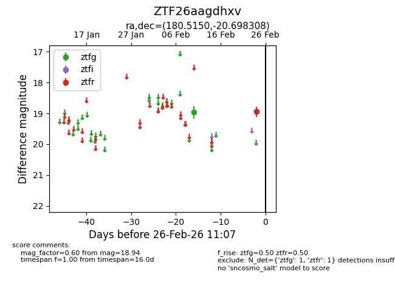
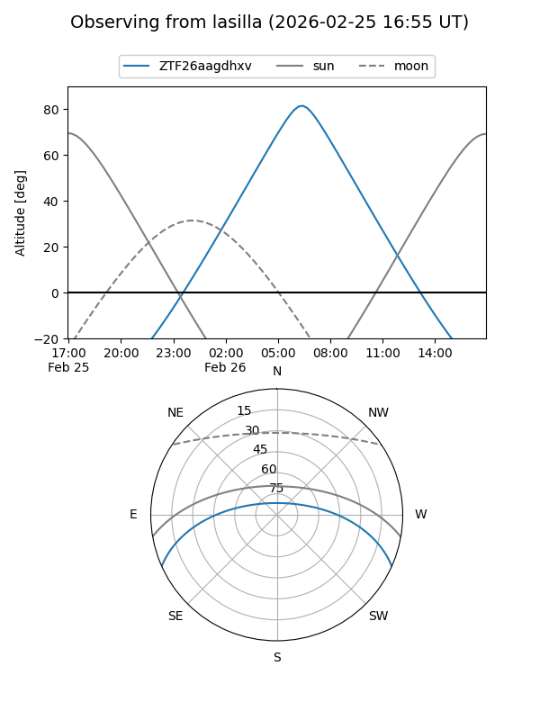
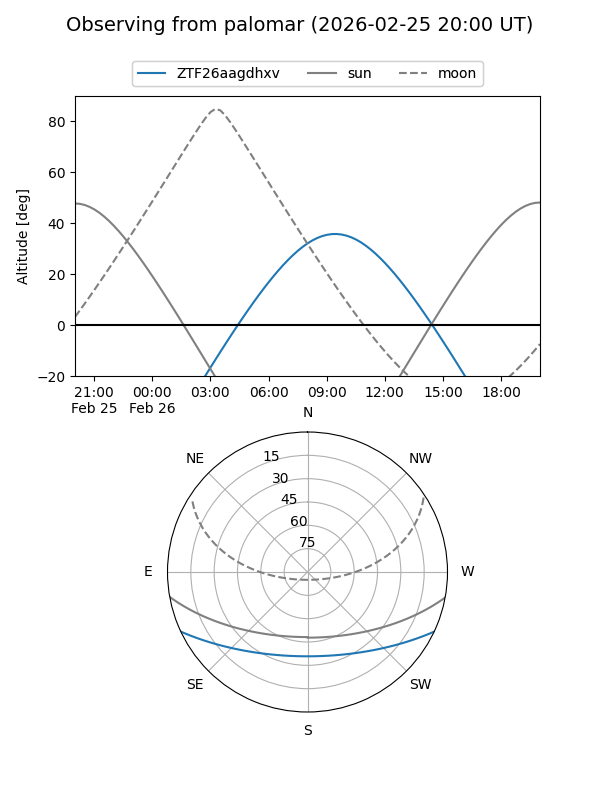

ZTF26aagdhxv
Target ZTF26aagdhxv at 2026-02-26 11:08
Aliases and brokers:
FINK: link
Lasair: link
ALeRCE: link
alt names
ZTF26aagdhxv (ztf,fink_ztf)
Coordinates:
equatorial (ra, dec) = 180.5150,-20.69831
equatorial (HMS+DMS) = 12:02:03.59,-20:41:53.91
galactic (l, b) = (287.6362,+40.70227)
Flags:
Photometry:
last ztfg=18.97, ztfr=18.94
1 ztfg, 1 ztfr detections
Lightcurve

Visibility


Additional plots